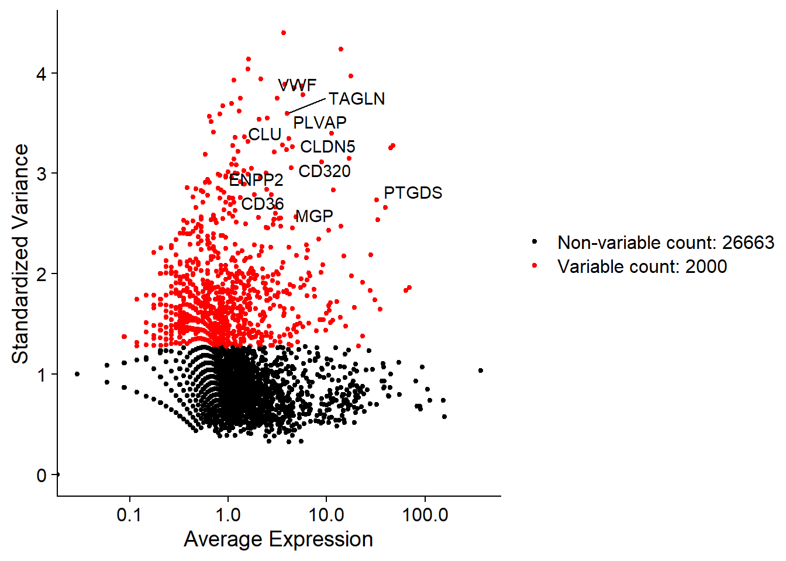

Learning about the single cell RNASeq workflow using the Seurat package and Crohn’s Disease dat from the Broad Institute Single Cell Portal
Author
Sadie Wisotsky
Published
June 12, 2026
library(Seurat)
Warning: package 'Seurat' was built under R version 4.5.3
Loading required package: SeuratObject
Warning: package 'SeuratObject' was built under R version 4.5.3
Loading required package: sp
Warning: package 'sp' was built under R version 4.5.3
Attaching package: 'SeuratObject'
The following objects are masked from 'package:base':
intersect, t
library(dplyr)
Warning: package 'dplyr' was built under R version 4.5.3
Attaching package: 'dplyr'
The following objects are masked from 'package:stats':
filter, lag
The following objects are masked from 'package:base':
intersect, setdiff, setequal, union
library(ggplot2)
Warning: package 'ggplot2' was built under R version 4.5.3
library(here)
Warning: package 'here' was built under R version 4.5.3
here() starts at D:/R/scRNASeq_learning
Part 1: Basic workflow on Colon Stromal data
I wanted to learn about single cell RNASeq and the Seurat package so I have chosen a data set that contains scRNASeq data from multiple tissue sites and compartments. This tissue has already been analyzed in this paper but I am hoping to use that as a check and as way to learn why they chose specific parameters and workflows.
For this first part, I will be following the basic workflow laid out in the Seurat tutorial for the Colon Stromal data. Further parts will expand out to the other 5 data sets and comparisons between them.
Step 1: Retrieve the data
I downloaded the data from the Broad Institute Single Cell portal here.
There are 6 main data subsets for the expression data. Samples from the colon and the ileum and then broken down by compartment by stromal, epithelial, and immune cells. For this first post, I will be focusing on the colon stromal data.
I wrote a function to create a custom Seurat object which will make it easier and more repeatable to read in the data for all 6 subsets.
create_seurat_obj <-function(path) { matrix_path <-list.files(path, ".*raw.mtx", full.names =TRUE) barcodes_path <-list.files(path, ".*.barcodes.tsv", full.names =TRUE) features_path <-list.files(path, ".*.features.tsv", full.names =TRUE) sample_name <- matrix_path |>basename() |>substr(1,6) counts_matrix <-ReadMtx(mtx = matrix_path,cells = barcodes_path,features = features_path,cell.column =1, # Usually barcodes are in the first columnfeature.column =2# Change to 1 if your gene file only has 1 column (IDs instead of Symbols) )# Create the Seurat object obj <-CreateSeuratObject(counts = counts_matrix, project = sample_name)# Tag with custom metadata obj$Tissue <- sample_namereturn(obj)}
I then create the Seurat object and look at what it is:
Warning: Feature names cannot have underscores ('_'), replacing with dashes
('-')
CO_STR
An object of class Seurat
28663 features across 39433 samples within 1 assay
Active assay: RNA (28663 features, 0 variable features)
1 layer present: counts
Can see we have 39433 samples and 28663 features. Seurat as of v5.0 allows you to store different assays in layers. Here we can see that our only layer for now is counts and our assay is RNA. I probably won’t dive deeper into this in this part but there is a vignette here for those interested.
Layers(CO_STR)
[1] "counts"
Step 2: QC
the first part of pre-processing the data is quality control. I will be following the guidelines outlined in the tutorial for now. Starting with calculating the percentage of mitochondrial (mt) contamination; a high value here is indictive of dying or low quality cells that we want to exclude from our analysis.
Then it is time to graph the metrics and visually check if our standard QC filters are appropriate:
# Visualize QC metrics as a violin plotVlnPlot(CO_STR, features =c("nCount_RNA"), group.by="orig.ident")
Warning: Default search for "data" layer in "RNA" assay yielded no results;
utilizing "counts" layer instead.
here’s where I realize that I am doing this across multiple samples where the tutorial is across a single sample. For me, it is hard to see where the cutoff for number of features should be based on this so let’s try to visualize it another way.
Looking at the density plots, it’s clear that cells from different patients have different distributions of RNA count and feature count. Using a single global threshold might discard high-quality cells from some samples while keeping low-quality cells from others.
To address this, I will split the Colon Stromal object by patient (orig.ident), and apply customized thresholds for patients that show outlier characteristics (as identified in my exploratory work), while using a robust default threshold for the others.
Warning in .f(.x[[i]], .y[[i]], ...): Patient N117351 has no cells passing
thresholds and will be excluded.
Warning in .f(.x[[i]], .y[[i]], ...): Patient N178961 has no cells passing
thresholds and will be excluded.
# Remove NULL elementsfiltered_stromal_list <-compact(filtered_stromal_list)# Merge back into a single clean Seurat objectCO_STR_clean <-merge(x = filtered_stromal_list[[1]], y = filtered_stromal_list[-1],project ="CO_STR_Clean")# Print comparison of cell countscat("Original cells:", ncol(CO_STR), "\n")
Next, I normalize the counts to control for sequencing depth and find the 2,000 most highly variable genes across cells, which will be used for linear dimensionality reduction (PCA).
# Standard log-normalizationCO_STR_clean <-NormalizeData(CO_STR_clean, normalization.method ="LogNormalize", scale.factor =10000)
Warning in simpleLoess(y, x, w, span, degree = degree, parametric = parametric,
: reciprocal condition number 7.8717e-28
Warning in simpleLoess(y, x, w, span, degree = degree, parametric = parametric,
: There are other near singularities as well. 0.090619
Finding variable features for layer counts.36
# Identify top 10 variable features and plottop10 <-head(VariableFeatures(CO_STR_clean), 10)plot1 <-VariableFeaturePlot(CO_STR_clean)plot2 <-LabelPoints(plot = plot1, points = top10, repel =TRUE)
When using repel, set xnudge and ynudge to 0 for optimal results
plot2
Warning in scale_x_log10(): log-10 transformation introduced infinite values.

Step 5: Scaling & PCA
I scale the data so that each gene has a mean expression of 0 and a variance of 1 across all cells. This ensures that highly expressed genes do not dominate the PCA. Then, I run PCA on the variable features.
Since our cells come from 38 different patient samples, we are very likely to observe patient-specific clusters due to technical variations or individual genetic baselines (batch effects). To align equivalent cell populations across patients, I will integrate the datasets using the Harmony integration method.
In Seurat v5, this is streamlined using the IntegrateLayers function.
library(harmony)
Warning: package 'harmony' was built under R version 4.5.3
Loading required package: Rcpp
Warning: package 'Rcpp' was built under R version 4.5.3
• This is Harmony2 version 2.0.5
• Read the guide: run vignette("quickstart", package="harmony")
• Get help: Visit the website at <https://korsunskylab.github.io/harmony2/> and
report issues on <https://github.com/immunogenomics/harmony/issues>
The `features` argument is ignored by `HarmonyIntegration`.
This message is displayed once per session.
Step 7: Clustering & UMAP Visualization
With the integrated representation (harmony reduction) ready, I will build the Shared Nearest Neighbor (SNN) graph, find clusters, and run UMAP for visualization. I’ll use 20 dimensions of the integrated space.
# Build SNN Graph and Find Clusters on integrated spaceCO_STR_clean <-FindNeighbors(CO_STR_clean, reduction ="harmony", dims =1:20)
Computing nearest neighbor graph
Warning: package 'future' was built under R version 4.5.3
Warning: The default method for RunUMAP has changed from calling Python UMAP via reticulate to the R-native UWOT using the cosine metric
To use Python UMAP via reticulate, set umap.method to 'umap-learn' and metric to 'correlation'
This message will be shown once per session
12:10:57 UMAP embedding parameters a = 0.9922 b = 1.112
12:10:57 Read 24808 rows and found 20 numeric columns
12:10:57 Using Annoy for neighbor search, n_neighbors = 30
12:10:57 Building Annoy index with metric = cosine, n_trees = 50
**************************************************|
12:10:58 Writing NN index file to temp file C:\Users\rgnes\AppData\Local\Temp\RtmpOEoowN\file41f436e37fa0
12:10:58 Searching Annoy index using 1 thread, search_k = 3000
12:11:03 Annoy recall = 100%
12:11:03 Commencing smooth kNN distance calibration using 1 thread with target n_neighbors = 30
12:11:04 Initializing from normalized Laplacian + noise (using RSpectra)
12:11:05 Commencing optimization for 200 epochs, with 1094230 positive edges
12:11:05 Using rng type: pcg
12:11:44 Optimization finished
Let’s visualize the results! I will plot the cells colored by cluster and patient identity side-by-side using the patchwork library. This allows us to verify if Harmony successfully mixed the patient samples while preserving biological differences.
library(patchwork)
Warning: package 'patchwork' was built under R version 4.5.3
We can see that cells from different patients are well-mixed within the same clusters, indicating that the Harmony integration successfully corrected for batch effects! In the next parts, we will extend this pipeline to the other tissue compartments (epithelial and immune) and dive deeper into biological characterization and marker identification.